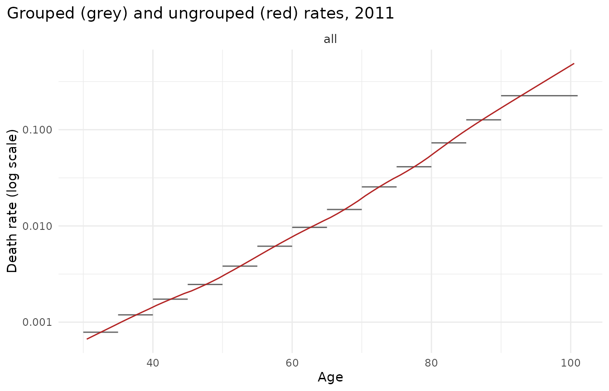
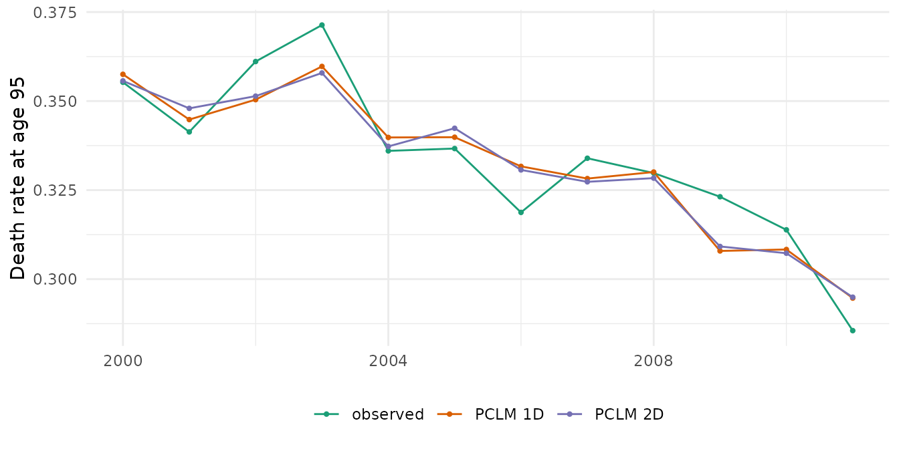

Data at different granularities: ungrouping HMD data
Source:vignettes/granularity-hmd.Rmd
granularity-hmd.RmdOfficial statistics often report deaths in 5-year age groups with an open interval (85+ or 90+), while populations are available by single year of age, and models are easiest to use on single years. This vignette shows how mortensor handles such data, using Human Mortality Database (HMD) series that are shipped with the StMoMo and demography packages:
- England & Wales, men, 1961-2011, ages 0-100
(
StMoMo::EWMaleData); - France, women and men, 1816-2006, ages 0-110+
(
demography::fr.mort).
Both contain single-year deaths and exposures, so we can group them as an official statistic would, ungroup them, and check the result against what was actually observed.
Reading HMD data
as_mt_data() converts the objects of both packages.
Deaths and exposures are stored per stratum (sex) with
their age and period intervals.
ew <- as_mt_data(StMoMo::EWMaleData)
ew
#> <mt_data> 1 stratum by sex, omega = 110
#> deaths single years 0-100; periods 1961-2011 (width 1); 5151 cells
#> exposure single years 0-100; periods 1961-2011 (width 1); 5151 cells
#> grid <mt_axis: age, 101 intervals> 0 1 2 3 ... 98 99 100
#> <mt_axis: period, 51 intervals> 1961 1962 1963 1964 ... 2009 2010 2011
fr <- suppressWarnings(as_mt_data(demography::fr.mort, years = 1950:2006))
fr
#> <mt_data> 2 strata by sex, omega = 110
#> deaths single years 0-109, 110+; periods 1950-2006 (width 1); 12654 cells
#> exposure single years 0-109, 110+; periods 1950-2006 (width 1); 12654 cells
#> grid <mt_axis: age, 111 intervals> 0 1 2 3 ... 108 109 110+
#> <mt_axis: period, 57 intervals> 1950 1951 1952 1953 ... 2004 2005 2006
mt_validate(fr)
#> <mt_validation> 2 finding(s): 0 error, 0 warning, 2 info
#> [info] zero exposure (exposure, female, n = 69): cells with zero exposure
#> [info] zero exposure (exposure, male, n = 108): cells with zero exposureThe France data use an open 110+ interval. For HMD data downloaded
directly (an account at https://www.mortality.org is needed),
mt_read_hmd() returns the same structure:
swe <- mt_read_hmd("SWE", years = 1950:2020)
sweGrouping and ungrouping deaths
We group the English and Welsh deaths at ages 30-100 into 30-34, …, 85-89 and 90-100, keep the exposures by single year, and restrict the data to 1980-2011:
ages <- 30:100
yrs <- 1980:2011
D <- StMoMo::EWMaleData$Dxt[as.character(ages), as.character(yrs)]
E <- StMoMo::EWMaleData$Ext[as.character(ages), as.character(yrs)]
lo <- c(seq(30, 85, 5), 90)
grouped <- data.table(year = rep(yrs, each = length(lo)), age_lo = rep(lo, length(yrs)),
age_hi = rep(c(lo[-1], 101), length(yrs)),
deaths = as.vector(rowsum(D, findInterval(ages, lo))))
single <- data.table(year = rep(yrs, each = length(ages)), age_lo = rep(ages, length(yrs)),
age_hi = rep(ages + 1, length(yrs)), exposure = as.vector(E))
x <- mt_data(deaths = grouped, exposure = single, age = c("age_lo", "age_hi"))
x
#> <mt_data> 1 stratum, omega = 110
#> deaths mixed widths (5,11) 30-100; periods 1980-2011 (width 1); 416 cells
#> exposure single years 30-100; periods 1980-2011 (width 1); 2272 cells
#> grid <mt_axis: age, 71 intervals> 30 31 32 33 ... 98 99 100
#> <mt_axis: period, 32 intervals> 1980 1981 1982 1983 ... 2009 2010 2011mt_ungroup() fits the penalized composite link model
(PCLM) to the deaths of each year with the single-year exposures as
offset. The latent quantity is the rate schedule, which is smooth over
age; the irregularities caused by the size of birth cohorts stay in the
exposures. Estimated deaths in each group are scaled to the observed
group total.
t0 <- proc.time()
u1 <- mt_ungroup(x)
(proc.time() - t0)[["elapsed"]]
#> [1] 0.826
head(attr(u1, "ungroup"), 3)
#> measure stratum period method lambda_age lambda_period ed
#> <char> <int> <char> <char> <num> <num> <num>
#> 1: deaths 1 1980 pclm_rate_1d 7378.751 NA 9.586505
#> 2: deaths 1 1981 pclm_rate_1d 1316.885 NA 11.536554
#> 3: deaths 1 1982 pclm_rate_1d 1305.364 NA 11.540877
#> max_rel_diff at_bound
#> <num> <lgcl>
#> 1: 0.02366659 FALSE
#> 2: 0.02518569 FALSE
#> 3: 0.02304707 FALSE
mt_plot_ungroup(x, u1, period = 2011)
Comparison with the observed single-year rates (median absolute log error, which for small values is close to the relative error). The observed rates contain Poisson noise, so even the true rates would not reach zero: the noise floor is about 0.012 at ages 30-89 and 0.021 at 90-100.
obs <- D / E
err <- function(u) {
est <- mt_array(u, "deaths")[, , 1] / mt_array(u, "exposure")[, , 1]
le <- abs(log(est / obs))
c(ages_30_89 = median(le[ages < 90, ]), ages_90_100 = median(le[ages >= 90, ]))
}
round(err(u1), 4)
#> ages_30_89 ages_90_100
#> 0.0152 0.0243Smoothing over time (2D)
With dims = 2 the PCLM estimates a smooth age-period
surface, which reduces year-to-year noise. It is slower and, inside
backtests, must be refitted on each training window (use
step_ungroup(dims = 2) in the preprocessing).
x_recent <- mt_subset(x, periods = c(2000, NA))
u2 <- mt_ungroup(x_recent, dims = 2)
attr(u2, "ungroup")
#> measure stratum period method lambda_age lambda_period ed
#> <char> <int> <char> <char> <num> <num> <num>
#> 1: deaths 1 all pclm_rate_2d 2971.66 150.3953 52.90981
#> max_rel_diff at_bound
#> <num> <lgcl>
#> 1: 0.06915425 FALSE
obs_recent <- obs[, as.character(2000:2011)]
est2 <- mt_array(u2, "deaths")[, , 1] / mt_array(u2, "exposure")[, , 1]
est1 <- (mt_array(u1, "deaths")[, , 1] / mt_array(u1, "exposure")[, , 1])[, as.character(2000:2011)]
mae <- function(est) {
le <- abs(log(est / obs_recent))
c(ages_30_89 = median(le[ages < 90, ]), ages_90_100 = median(le[ages >= 90, ]))
}
round(rbind(dims_1 = mae(est1), dims_2 = mae(est2)), 4)
#> ages_30_89 ages_90_100
#> dims_1 0.0162 0.0272
#> dims_2 0.0159 0.0252
long <- rbind(
data.table(source = "observed", year = 2000:2011, rate = obs_recent["95", ]),
data.table(source = "PCLM 1D", year = 2000:2011, rate = est1["95", ]),
data.table(source = "PCLM 2D", year = 2000:2011, rate = est2["95", ]))
ggplot2::ggplot(long, ggplot2::aes(year, rate, colour = source)) +
ggplot2::geom_line() + ggplot2::geom_point(size = 0.8) +
ggplot2::labs(x = NULL, y = "Death rate at age 95", colour = NULL) +
scale_colour_mortensor(type = "categorical") +
theme_mortensor()
Without exposures
If only deaths are available, they can be ungrouped as counts per year of age. mortensor warns, because the split of the oldest group (here 90-100) is then determined by the smoothness assumption alone, and refuses 2D smoothing of counts: cohort-size waves run diagonally through the age-period surface of death counts and cannot be represented by a smooth surface.
x_counts <- x
x_counts$obs$exposure <- NULL
uc <- mt_ungroup(x_counts)
#> Warning in mt_ungroup(x_counts): Deaths are ungrouped as counts without
#> exposures; the split of the open interval is weakly identified.
est_c <- mt_array(uc, "deaths")[, , 1] / E
round(c(ages_30_89 = median(abs(log(est_c / obs))[ages < 90, ]),
ages_90_100 = median(abs(log(est_c / obs))[ages >= 90, ])), 3)
#> ages_30_89 ages_90_100
#> 0.028 0.122
mt_ungroup(x_counts, dims = 2)
#> Error in `mt_ungroup()`:
#> ! 2D ungrouping of death counts without exposures is not supported: smoothing counts over time cannot represent cohort-size waves. Add exposures on the grid or use dims = 1.Grouped exposures and open intervals
For France we group the exposures at ages 30-84 into 5-year groups, keep the open interval 85+, and ungroup them again. Exposures are counts, so they are ungrouped without offset; the monotone spline of cumulative exposures reproduces group totals exactly.
fr2 <- mt_regroup(mt_subset(fr, periods = c(1990, NA)), age = 30:85)
fr_grouped <- fr2
fr_grouped$obs$exposure <- mt_regroup(fr2, age = seq(30, 85, 5))$obs$exposure
fr_grouped$obs$deaths <- NULL
fr_grouped <- mt_set_grid(fr_grouped, age = single_ages(30, 85))
truth <- mt_array(fr2, "exposure")
for (method in c("pclm", "monotone")) {
est <- mt_array(mt_ungroup(fr_grouped, exposure_method = method), "exposure")
cat(sprintf("%-9s median abs log error, ages 30-84: %.4f\n", method, median(abs(log(est / truth))[1:55, , ])))
}
#> pclm median abs log error, ages 30-84: 0.0209
#> monotone median abs log error, ages 30-84: 0.0165Splitting the open interval itself is a different matter. Asking for single years up to 100+ forces the method to extrapolate the age pattern inside 85+ from the totals alone; mortensor warns, and the comparison with the observed exposures shows why:
fr3 <- mt_regroup(mt_subset(fr, periods = c(1990, NA)), age = 30:100)
fr3_grouped <- fr3
fr3_grouped$obs$exposure <- mt_regroup(fr3, age = seq(30, 85, 5))$obs$exposure
fr3_grouped$obs$deaths <- NULL
fr3_grouped <- mt_set_grid(fr3_grouped, age = single_ages(30, 100))
est <- mt_array(mt_ungroup(fr3_grouped), "exposure")
#> Warning: The open exposure interval from age 85 is split into 16 grid cells
#> from its total alone; the age pattern inside it is extrapolated and can be
#> badly wrong. Prefer data with a higher open age or a grid whose open interval
#> starts at 85.
le <- abs(log(est / mt_array(fr3, "exposure")))
round(c(ages_85_99 = median(le[56:70, , ]), age_100_plus = median(le[71, , ])), 2)
#> ages_85_99 age_100_plus
#> 0.27 1.84Errors of this size (a factor of several at 100+) make such estimates unusable. Use population data with a higher open age (single-year populations up to 100+ are published by many statistical offices), or keep the open interval of the grid where the data have it.
Regrouping
mt_regroup() aggregates exactly. Cells that would
straddle a target boundary raise an error; target cells that are only
partly observed are dropped with a warning.
mt_regroup(fr, age = c(0, 1, seq(5, 100, 5)), period = seq(1950, 2005, 5))
#> <mt_data> 2 strata by sex, omega = 110
#> deaths mixed widths (1,4,5) 0-99, 100+; periods 1950-2006 (width 5,2); 528 cells
#> exposure mixed widths (1,4,5) 0-99, 100+; periods 1950-2006 (width 5,2); 528 cells
#> grid <mt_axis: age, 22 intervals> 0 1-4 5-9 10-14 ... 90-94 95-99 100+
#> <mt_axis: period, 12 intervals> 1950-1954 1955-1959 1960-1964 1965-1969 ... 1995-1999 2000-2004 2005-2006Summary
- Ungroup deaths as rates, with exposures on the target grid as offset. On these HMD data the error is close to the Poisson noise of the observed single-year rates.
- Ungroup exposures first when only grouped exposures are available, but do not split an open interval of exposures from its total alone.
- Deaths without exposures can be ungrouped in 1D, with weak information about the oldest ages.
- Inside forecasting pipelines, ungrouping is a preprocessing step that is refitted on each training window (see the forecasting vignette).